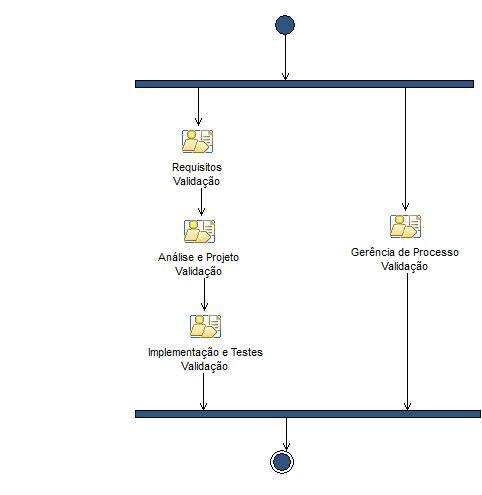

Phase: Validação
O foco da Fase de Validação é assegurar que o software esteja disponível para seus usuários finais.
Description
Work Breakdown Structure
Team Allocation
Work Product Usage
Workflow

Work Breakdown